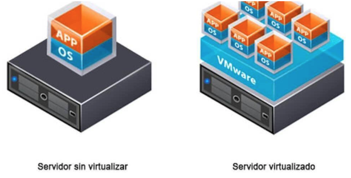
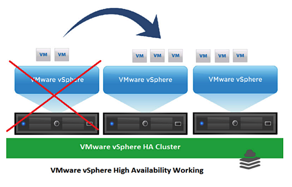

IMPORTANCIA
En primer lugar, por lo que a día de hoy más se usa es para la ejecución de software disponible sólo en sistemas operativos diferentes al nuestro. Ejemplo muy común, como usuario de mac OS queremos usar un programa solo disponible para Windows, en este caso podemos crear un entorno Windows dentro de nuestro mac OS y ejecutar ese programa sin problema alguno. Otro ejemplo podría ser estar en un Windows como sistema y necesitar cierta funcionalidad solo disponible en un Linux. Como estos muchos otros ejemplos pueden suceder, y para esto la virtualización es la solución más cómoda y efectiva, por no decir económica.
Por otro lado tenemos la seguridad, todos alguna vez hemos hecho uso de internet para descargar archivos o programas de fuentes de dudosa procedencia, y esto suele ser la principal causa de infección de virus para nuestro PC, originando desde pérdidas de datos hasta colapsar el PC completo y hacerlo irreparable. Ante esto, si creamos un sistema paralelo en el que probamos estas descargas aislamos ese virus de forma que lo peor que puede pasar es que rompa esa máquina virtual, pero no afectará en nada a nuestro sistema. Es más, esta técnica es muy usada por expertos en ciberseguridad para analizar virus y crear contramedidas a ellos.
Por estos motivos y más, como podrían ser la limpieza de nuestro sistema, no creamos archivos basura si queremos probar un programa que finalmente desinstalamos, la virtualización es algo que cualquier usuario puede usar y debería usar en su día a día.
Reducir el número de servidores físicos gracias a la virtualización
Antiguamente, cuando el departamento de IT o la empresa tenían la necesidad de montar un servicio nuevo dentro de la red (E-mail, ERP, CRM, etc…), éste requería de la compra de un servidor físico adicional a los ya existentes con el objetivo de ponerlo en producción. Esto suponía para las compañías unos costes agregados de compra, instalación, configuración,… además de unos costes periódicos de mantenimiento, alojamiento, electricidad y espacio para dar la continuidad necesaria.
Este servidor que debía comprarse específicamente era una caja cerrada donde se encontraba dicho servicio y no tenía mucha flexibilidad para realizar ampliaciones de CPU, memoria, red, etc… dado que, si alguna de estas era necesaria se tenía que parar el servidor abrir, realizar la ampliación y volver a montar.
Por otro lado, cuando el servidor físico fallaba todos los servicios que estaban corriendo en él también se veían interrumpidos hasta que la incidencia no era solucionada por el departamento de IT.Por ello era requerido un elevado coste en tiempo y dinero para la compañía.
A día de hoy, gracias a los avances en tecnología, concretamente, en el campo de la virtualización desplegar un servicio/sistema se ha convertido en una tarea mucho más fácil y flexible con un coste muy reducido y con una menor necesidad de implicar al equipo IT en su gestión, lo que ofrece a la organización la oportunidad de invertir esos recursos en otros ámbitos.
La virtualización supone la minimización de cualquier sistema, recurso o referencia física dentro de un departamento de IT. Y es que se trata de una tecnología de software que ha conseguido transformar el escenario tecnológico haciendo posible que el hardware, que antiguamente estaba capacitado para ejecutar un solo sistema operativo o solo una aplicación/servicio, sea capaz de soportar diferentes sistemas operativos y/o aplicaciones al mismo tiempo en un mismo servidor, es decir, si tenemos un servidor físico al cual le añadimos una capa de virtualización obtendremos una gran escalabilidad al incrementar la flexibilidad del hardware.

Con esta capa se obtienen diferentes máquinas virtuales que pueden ejecutar distintos sistemas operativos y/o aplicaciones de forma simultánea utilizando un solo servidor físico. Además, podemos decir que, cada una de estas máquinas son independientes una de la otra, por lo que, en caso de producirse algún bloqueo o situación no deseada en alguna de ellas, no afecta en ningún momento a las demás máquinas virtuales.
Si todo esto, se combina con varios servidores de gran capacidad virtualizados obtendremos un escenario de alta disponibilidad, donde tendremos la oportunidad de mover máquinas virtuales entre servidores físicos sin que se produzca ningún corte y levantar éstas en otro servidor en caso de que alguno fallara. Por lo que de esta manera se reducen los tiempos de interrupción de forma elevada.

Numerosas empresas almacenan una gran cantidad de datos y/o información y les preocupa la destinación de numerosos recursos de personal o económicos para su mantenimiento. Por ello, una de las soluciones es la implementación de la tecnología, es decir, la virtualización, ya que, puede ayudar a las grandes y pequeñas empresas a reducir el número de servidores físicos y por lo tanto reducir los costes de mantenimiento, electricidad y personal.
Beneficios de la virtualización
La virtualización y el cloud computing se han convertido en asuntos prioritarios para muchas empresas, ya que, la automatización y la orquestación desdoblamiento de las aplicaciones permiten a los departamentos de IT trabajar y desarrollar de forma rápida y precisa los servicios que demandan sus clientes.
En la actualidad, las empresas que apuestan por introducir mejoras o soluciones en aquellas áreas donde no está presente el core de su negocio, es básicamente, para conseguir un beneficio o ventaja como la reducción de costes y el aumento de la eficiencia de los servicios IT. Debemos tener claro que, como todo, los servicios virtuales no son perfectos, pero sí que cuentan con unas ventajas que en su conjunto superan a esas mínimas desventajas que puede acarrear la virtualización.
Optimización del mantenimiento físico
La virtualización debe ser un proyecto bien gestionado y definido por una empresa especializada en la realización de estos servicios para garantizar el éxito de la implementación.
A pesar de la importancia y de los beneficios que aporta esta virtualización, no debemos olvidarnos que aunque se reduzcan el número de servidores físicos de las empresas, es necesario seguir manteniendo aquellos que se conservan. Por ello, como ya hemos comentado anteriormente, la carga de trabajo asociada al mantenimiento de equipos, sistemas operativos y aplicaciones supone una barrera en la planificación de muchas tareas que no se encuentran dentro del core del negocio de la compañía, por ello, una empresa especializada puede encargarse del mantenimiento de los servidores físicos.
En Ilimit conocemos las ventajas que ofrece la virtualización y estamos familiarizados en el mantenimiento continuo de los servidores físicos, y es que a través de nuestros técnicos realizamos un mantenimiento exhaustivo del parque informático de la empresa, ya sea de forma presencial u online, ofreciendo apoyo en la resolución de todas aquellas incidencias y/o necesidades específicas de los usuarios con el equipamiento IT.
Llevar a cabo una monitorización de métricas asociadas al equipo y servicios instalados, la gestión diaria del parque, su modernización y actualización y la realización de análisis de riesgos periódicos o la configuración del equipamiento en los traslados como se realizan desde Ilimit ayudan a las empresas a centrarse en aquellas necesidades que generan compensaciones económicas.
En definitiva, la transición de una infraestructura física tradicional a una virtualizada ofrece a las empresas numerosas ventajas, tanto a nivel de inversión como de continuidad con el core del negocio.